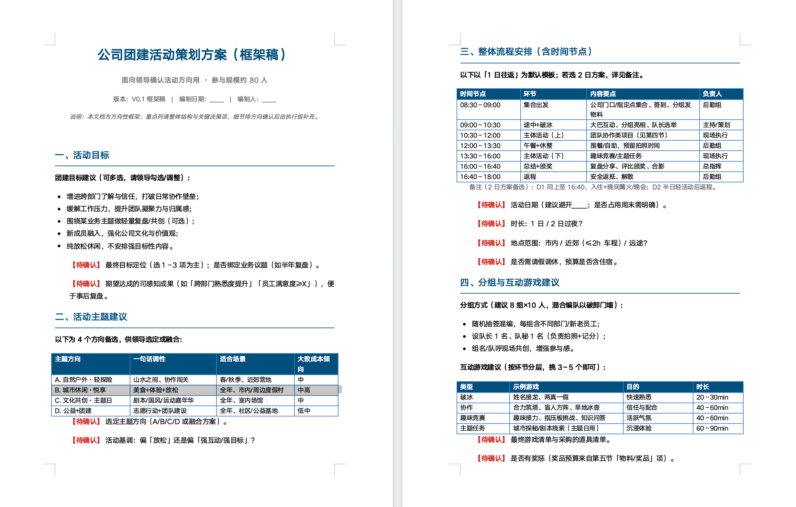
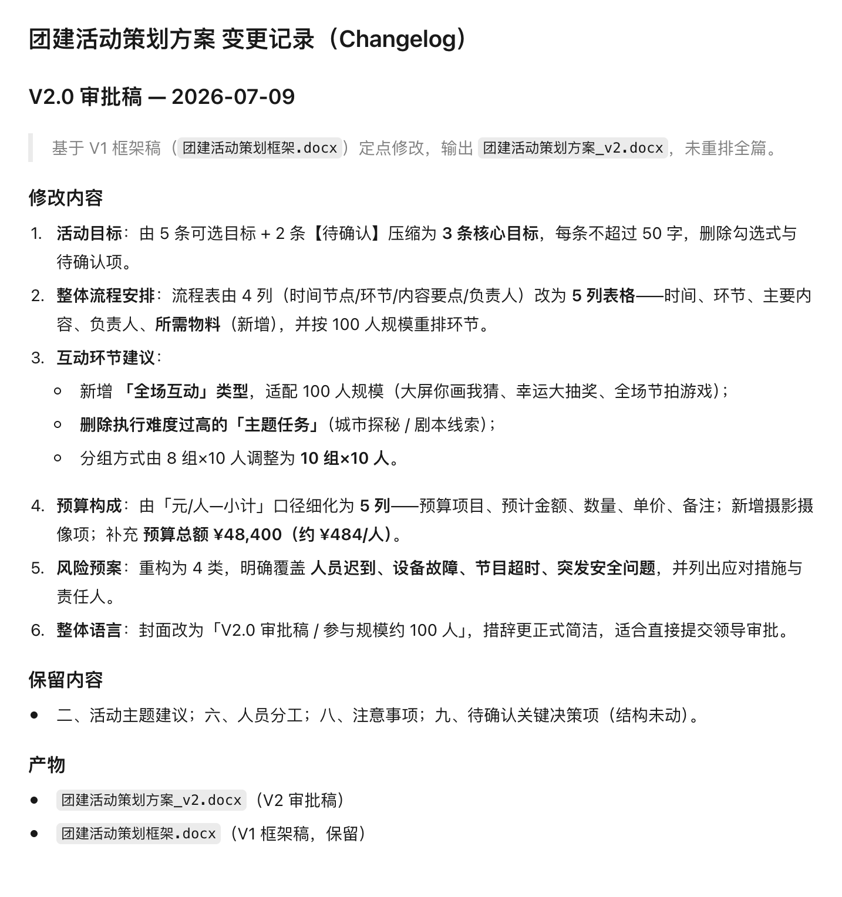

本课导读模块二 · 办公实战
前面几课你学会了指挥 AI。从这一课开始，进入真实的办公场景。 第一站是 Word——通知、总结、方案、申请，这些文体的共同点是： 有固定结构，而且要经得起人看。
这一课你会真的生成三样东西：一份通知、一份实习总结、三份邀请函。
学习目标
学完这一课，你应该能——
- 写出完整的文档生成指令，说清类型、主题、对象、结构、字数、语气；
- 用大纲先行的办法写长文档，避免整篇返工；
- 把一份 AI 初稿改到「能发出去」，并说清空话词在哪；
- 用模板 + 变量批量生成多份文档，并知道该抽查什么；
- 说清在 WorkBuddy 里改文档时，哪些操作不消耗积分、哪些要注意。
知识点导航
一、为什么 AI 写的文档「一眼假」问题
先读一段。这是让 AI 写「旧书交换通知」时，它最可能给你的东西：
为了进一步丰富校园文化生活，切实营造良好的学习氛围，有效促进同学之间的交流与沟通，
经研究决定，特举办本次旧书交换活动。希望广大同学能够积极参与，共同感受阅读的魅力，
在书的海洋中汲取知识与力量。让我们携手共进，共同营造书香校园的良好氛围！读完你发现问题了吗——它说了很多话，但没告诉你任何一件事： 几号？几点？在哪？怎么参加？一个都没有。
| 症状 | 长什么样 | 根本原因 |
|---|---|---|
| 空话堆砌 | 「进一步」「切实」「有效」「积极」成串出现 | 它用套话填补了它不知道的信息 |
| 信息缺失 | 通篇找不到具体时间、地点、人名 | 你没给，它不敢编，就用空话绕过去 |
| 结构均等 | 每段差不多长，像填空题 | 它按「平均分配」生成，分不出重点 |
文档指令的五要素
| 要素 | 要交代什么 |
|---|---|
| 类型与主题 | 通知？总结？方案？讲的是哪件事 |
| 对象 | 写给谁看——这决定语气和详略 |
| 结构 | 分几块、按什么顺序 |
| 字数与语气 | 多少字、什么调子 |
| 兜底 | 没有的信息写成【待确认】，不许自己编 |
做完你手上会有：一份 200 字以内、五要素齐全的通知初稿。
场景：校园旧书交换活动，你要发一份通知。信息如下——
活动：校园旧书交换
对象：全校学生
时间：2026 年 9 月 18 日 15:00
地点：图书馆前广场（下雨改到图书馆一楼大厅）
参与方式：携带 1 本完整旧书，现场交换
联系人：（还没定）第 1 步 · 把素材和指令一起发出去（4 分钟）
- 先把上面的活动信息复制下来点代码块右上角「复制」。
- 再把下面这段指令复制过去素材在前、指令在后，一起发送。
请为高职学生写一则校园旧书交换通知。
必须包含：标题、对象、时间、地点、参与方式、温馨提醒。
篇幅 200 字以内，语气平实，不要用「进一步」「切实」这类套话。
资料里没有的信息（比如联系人）写成【待确认】，不要自己编。第 2 步 · 做到这三条，就算做完了
- 五件事齐了时间、地点、对象、怎么参加、温馨提醒都在。
缺了哪样：把缺的那项点名补一句，例如「再补上参与方式和温馨提醒」。 - 没有套话在正文里搜「进一步 / 切实 / 有效 / 积极」——应该一个都搜不到。
搜到了：补一句「不要用『进一步』『切实』这类套话」，再发一次。 - 联系人写的是【待确认】不是它自己编出来的一个名字。
它编了名字：⚠️ 说明指令里那句「资料里没有的信息写成【待确认】，不要自己编」没生效—— 把这句放到指令最后再发一次。
要交的成果：这份通知初稿，存好别改——下一节还要用它。
二、长文档：先要大纲方法
短通知可以一步到位。但长文档（一千字以上的总结、方案）直接让它写， 十有八九要整篇返工：结构不对、重点偏了、该有的章节没有。
更省事的做法就四个字：大纲先行。 把它想成盖房子——先定几层几间，再往房间里搬家具。骨架错了，改骨架比改装修便宜得多。
| 阶段 | 你要什么 | 只盯两件事 |
|---|---|---|
| 第一步 | 只要大纲，不要正文 | 有没有漏、顺序对不对 |
| 第二步 | 确认后按大纲展开 | 每一节的比例、语气对不对 |
做完你手上会有：一份大纲 + 按大纲展开的正文，两个文件。
第 1 步 · 先只要大纲（复制发送）：
我要写一份实习总结，大约 1500 字，交给学校指导老师。
先只给我大纲，不要展开正文。
我自己会补具体单位和数据，所以大纲里涉及具体信息的地方标【待确认】。第 2 步 · 检查大纲，重点看有没有漏
一份实习总结的骨架，下面五块必须都在。对着它给你的大纲数一遍：
- 实习基本情况时间、单位、岗位。
- 主要工作内容具体干了哪些事。
- 遇到的问题与解决办法⚠️ 这一块最容易漏——AI 常常只写成绩、不写问题。
- 收获与体会学到了什么、有什么感受。
- 下一步改进方向还差在哪、打算怎么补。
发现少了一块：直接补一句「大纲里再加一节『遇到的问题与解决办法』」，让它重出大纲。 现在改几乎不花时间，等正文写完再改就是重写。
第 3 步 · 确认后展开（复制发送）：
按这个大纲展开正文，总共 1500 字左右，各节比例按重要性分配。
所有我不提供的具体信息（单位、日期、同事姓名、数据）一律写【待确认】，
不要推测，不要编造。语气平实，不要套话。第 4 步 · 做到这三条，就算做完了
- 结构和你确认的大纲一节不差对照第 2 步那五块再看一遍。
多了或少了章节：说明第 3 步那句「按这个大纲展开」没被严格遵守， 补一句「严格按上面确认的大纲，不要增删章节」，再发一次。 - 字数在 1300–1700 之间
字数差太多：直接点明——「现在只有 900 字，扩到 1500 字左右， 重点扩『主要工作内容』那一节」。 - 搜「【待确认】」能搜出不少数量不少才是对的，说明它真的没编。
一处【待确认】都没有：⚠️ 多半是它替你把单位、日期、数据都编上了。 补一句「我不提供的信息一律写【待确认】，不要推测、不要编造」，重新生成。
要交的成果：实习总结的大纲 + 展开后的正文（两个文件都要）。
如果它给你编了单位和数据，说明你那句兜底没写住—— 这个发现比结果本身更值钱，记下来。
一份「框架稿」做得好的样子，大致就是这样——该定的定，不该猜的全标出来：

这才是对的：它不知道的事一处没编，反而把「需要你补什么」列成了清单， 你拿着它去问领导、去补数据就行。反过来，一上来就写满具体数字的文档多半是编的， 核起来更费劲。
它顶部还标了「版本：v0.1 框架稿」——自己留了版本号， 后面改到 v2 时才知道动了什么。
截图整理自 WorkBuddy 实战蓝皮书，仅作课堂讲解用。蓝皮书为社区非官方读物，产品口径以官方文档为准。
三、把初稿改到能用打磨
初稿出来之后，接下来是三件很容易混在一起的事。混着提要求，结果就是三件都没做好。
| 动作 | 解决什么 | 怎么检查 |
|---|---|---|
| 润色 | 句子太长、表达不顺、重点不突出 | 读一遍，有没有要读第二次的句子 |
| 审校 | 事实错误、格式不统一、错别字 | 对着原始资料逐条核，不凭印象 |
| 去 AI 味 | 空话多、信息少、不像人说的 | 删掉形容词后，还剩多少实际内容 |
去 AI 味不是换词。把「进一步」换成「更」，本质没变。真正有效的只有三个动作，顺序不能反：
| 顺序 | 动作 | 为什么是这个顺序 |
|---|---|---|
| ① | 删空话 | 先把位置腾出来 |
| ② | 补具体 | 空出来的位置要用真实信息填上——这一步只能你来 |
| ③ | 换语气 | 按使用场景调整正式程度 |
否则它可能顺手把结构重排一遍、或删掉你没让它删的内容，而你翻半天看不出动了哪里。 一份合格的变更记录长这样：

注意开头那句「基于 V1 框架稿定点修改，未重排全篇」—— 这正是给 AI 的约束：只改该改的，别动整体。要它这样干，你得在指令里写明。
本课实操③ 会用到变更记录——你在指令里要求它附一份，就能拿到； 同时那份初稿也要留着，它就是你的「改前」版本。
截图整理自 WorkBuddy 实战蓝皮书，仅作课堂讲解用。
做完你手上会有：初稿 + 修订稿两个文件，外加一份变更记录—— 它改了哪里、留了什么，你能一眼看见。
第 1 步 · 发出修改指令（3 分钟）
- 回到
wb-试验这个工作目录 实操① 生成的通知初稿就在里面，别把它挪走。 - 把下面这段指令发出去注意最后那几行要求它「附变更记录」—— 这是你事后能验收的前提。
请把工作目录里的通知初稿，改到「能直接发班级群」的程度。要求：
1. 删掉所有空话套话（比如"进一步""切实""内容丰富""营造氛围"这类），一个字不留；
2. 原文没写的时间、地点、联系人不要自己编，继续写成【待确认】；
3. 把活动信息表里的真实内容补进去（时间、地点、怎么参加）；
4. 语气改成发给同学的口语，句子短一点。
改完请附一份变更记录，写清三块：
- 修改内容：逐条列出你改了哪里；
- 保留内容：哪些信息你一个字没动；
- 产物：新文件叫什么名字。
不要覆盖原文件，另存一份。第 2 步 · 盯着它改，别急着收结果（3 分钟）
- 看它的执行过程它是在逐条对照要求改，还是通篇重写了一遍—— 后者容易把你原来的信息也一起改掉。
- 确认它真的另存了新文件去工作目录看：初稿还在不在、新文件叫什么。
初稿被覆盖了：⚠️ 说明「不要覆盖原文件」那句没生效—— 把它提到指令最前面，再发一次。
第 3 步 · 做到这四条，就算做完了
- 变更记录拿到了能看清它改了哪几条、留了哪些。
它没给：直接说「把这次修改的变更记录补一份给我」。 - 空话词一个不剩拿下面这份清单，在修订稿里搜一遍。
还有残留：点出具体是哪几个词，让它只改这几个，别整篇重写。 - 五件事都还在时间、地点、对象、参与方式、温馨提醒——
改稿最容易把这些真实信息一起删掉。
删过头了：对照活动信息表，让它把缺的那几项补回来。 - 事实与素材核对无误日期、时间、地点逐字对一遍。
对不上：以活动信息表为准，让它改回正确的值。
进一步 切实 有效 积极 深入贯彻落实 相关精神 营造氛围
紧紧围绕 形式多样 内容丰富 特色鲜明 潜移默化
携手共进 共同感受 汲取力量 踊跃参与要交的成果：初稿 + 修订稿两份文件 + 一份变更记录。
这一节的三个动作——审校、润色、去 AI 味，都可以交给 AI 做。 但验收必须你自己来：它删干净没有、有没有删过头、有没有编造， 这三条 AI 自己判不了。
四、批量生成：模板 + 变量进阶
一份文档好办。但现实里经常要写一批：30 份邀请函、50 份证书、一个班的评语， 内容大同小异，只有姓名、日期在变。
复制粘贴 30 遍当然能做，但错一份你都不知道。更靠谱的是拆成两部分：
| 部分 | 特点 | 邀请函里的例子 |
|---|---|---|
| 模板 | 每份都一样，一个字都不该变 | 称呼格式、正文结构、落款 |
| 变量 | 每份都不同，从数据表取值 | 姓名、专业、受邀事项 |
做完你手上会有：output/ 目录下 3 份与名单一一对应的邀请函文件。
第 1 步 · 先建数据表：在 wb-试验/input 里新建 名单.xlsx，
填下面三行（都是虚构的，不要用真人信息）：
序号 姓名 专业 受邀事项
1 张明 计算机应用技术 校友经验分享
2 李婷 数字媒体技术 技能竞赛颁奖
3 王海 人工智能技术应用 实训成果展示第 2 步 · 发指令（复制发送）：
根据 input/名单.xlsx 里的 3 条记录，批量生成 3 份邀请函（Word 文档）。
模板固定：标题「邀请函」+ 称呼「尊敬的 ___ 同学」+ 正文邀请其参加 ___ 活动
+ 落款「校园活动组委会」+ 日期。
变量从表格取值：姓名、专业、受邀事项。
每份文件名格式：邀请函_序号_姓名.docx
输出到 output/ 目录。
验收：3 个文件都生成，且每份里的姓名、专业、受邀事项与表格一一对应。第 3 步 · 抽查（这一步绝不能省）：
- 抽第 2 份打开它，核三样：姓名对不对、专业对不对、受邀事项对不对。
- 再抽首份和末份边界最容易出错，中间反倒不容易。
- 看文件名三个文件名是不是分别对应三个人——出现「未命名(1)」就等于没做。
要交的成果：3 份邀请函文件。
做到这三条，就算做完了
- 抽到的每一份都对得上姓名、专业、受邀事项与名单表一一对应。
对不上：⚠️ 说明它批量时串了行。把名单表和错的那份一起发过去， 补一句「第 N 条记录对应第 N 份文件，逐条对齐，不要串行」，让它重新生成。 - 文件名规范分别是「邀请函_序号_姓名.docx」。
出现「未命名(1)」：等于没做——在指令里补一句「文件名格式为 邀请函_序号_姓名.docx」。 - 首份和末份也抽查过了边界最容易出错，中间反倒不容易。
只抽了中间那份：补抽首末两份——批量任务出错，八成出在边界上。
五、在 WorkBuddy 里直接改工具
文档生成出来之后就是改。传统做法是「复制出来 → 打开 WPS → 手改 → 再贴回去」， 一来一回很费事。WorkBuddy 提供了一条更顺的路，官方叫人机双写： 在它内部直接编辑 Word / Excel / PPT / Markdown 及腾讯文档， 阅读、手动修改与 AI 辅助在同一个界面完成。
| 方式 | 适合做什么 | 消耗积分吗 |
|---|---|---|
| 手动编辑 | 错别字、字号、个别措辞这类细节 | 不消耗 |
| AI 编辑 | 整段润色、排版重构、内容生成 | 消耗 |
官方给的原则很好记：细节微调手动改最快，大块重构交给 AI。
怎么用：选区精调
- 打开文件在任务流里点文件，右侧展开预览，可以直接手动编辑。
- 选中内容划词选中某段文字，会出现工具栏。
- 下达指令点工具栏的「AI 编辑」，输入修改要求。支持批量添加多处修改，最后一次性发送。
- 核对改动改完它会告诉你改了哪里，所有改写都可以核对和撤销。
相比「把整篇复制给 AI 让它重写」，选区精调只改你选中的部分、不碰其他地方， 也更省 Token。
二、重要文档先另存一份。官方建议先「另存为新文件」再让 AI 改写，保留原始版本以便回溯； 并定期通过「变更」面板检查修改记录。改错了能回退，比改对了更重要。
随堂自测不计分 · 课后自检
先自己想，再点开答案。这套题是给你自己查漏用的，和要提交的作业不重复。
- A. AI 的文笔不够好
- B. 你给的信息不够具体，它只能用套话填空
- C. 模型版本太旧
- D. 中文不适合 AI 写作
- A. 直接说「写一份 1500 字实习总结」，一次生成到位
- B. 先让它只给大纲，确认章节和顺序后再展开正文
- C. 一次生成三份，挑最好的那份
- D. 让它每写一段就问你要不要继续
- A. 换语气 → 补具体 → 删空话
- B. 补具体 → 删空话 → 换语气
- C. 删空话 → 补具体 → 换语气
- D. 删空话 → 换语气 → 补具体
- A. 正确，格式定了就保险
- B. 错误，转格式不修内容错误，核验必须在转格式之前做完
本课要点回顾
这一课要带走五件事
- 「AI 味」是信息问题，不是文笔问题——原料给全，空话自然少；
- 文档指令五要素：类型与主题 / 对象 / 结构 / 字数与语气 / 兜底， 兜底那句就是「没信息写【待确认】」；
- 长文档大纲先行：先要大纲、确认结构、再展正文，避免整篇返工；
- 去 AI 味三步：删空话 → 补具体 → 换语气，顺序不能反；
- 批量靠模板 + 变量，出稿后必须抽查字段错位，转 PDF 不能代替核验。
下一步棋：今天处理的是「文字型」文档，讲究的是结构和语气。 下一课换成表格：Excel 数据处理——同样的流程，但难点从「读着顺不顺」 变成了「数字对不对」。
课后作业单选 / 多选 / 判断
下面这套题发在学习通上。点一下展开，再点框内右上角「复制」就能整段拿走。
1.（单选）AI 写的文档之所以「一眼假」，最根本的原因是？
A. AI 的文笔不够好
B. 给它的信息不够具体，它只能用套话填空
C. 模型版本太旧
D. 中文不适合 AI 写作
【答案】B
【解析】空话多、信息少、结构均等，根子都在原料不足。它不知道具体时间地点，又不敢编，就用「进一步」「切实」这类词把位置占了。所以解药是「把信息给全」，而不是「让它写得自然点」。
2.（单选）写一份 1500 字的实习总结，下面哪种做法最不容易返工？
A. 直接说「写一份 1500 字实习总结」，一次生成到位
B. 先只要大纲，确认章节和顺序后再让它展开正文
C. 一次生成三份，从中挑最好的
D. 让它每写一段都停下来问你要不要继续
【答案】B
【解析】这就是「大纲先行」——先搭骨架再填肉。长文档直接生成，一旦结构不对就得整篇返工；在大纲阶段改，成本几乎为零。C 是碰运气，改三份比改一份还费事；D 交互太重，也没解决结构问题。
3.（多选）文档生成指令里应该交代清楚的有哪些？
A. 文档类型和主题
B. 写给谁看（对象）
C. 分几块、什么顺序（结构）
D. 用哪个大模型
【答案】ABC
【解析】还要加上「字数与语气」和「兜底要求」——没信息写【待确认】。D 是环境配置，不是任务描述，默认用自动模式即可。
4.（单选）「去 AI 味」的正确操作顺序是？
A. 换语气 → 补具体 → 删空话
B. 补具体 → 删空话 → 换语气
C. 删空话 → 补具体 → 换语气
D. 删空话 → 换语气 → 补具体
【答案】C
【解析】先删是为了腾出位置，再补进真实信息，最后按使用场景调整语气。顺序反了会发现白干——比如先调语气，调完内容还是空的。
5.（判断）批量生成的邀请函转成 PDF 之后，就不需要再核对内容了。
A. 正确，格式定了就保险
B. 错误，转格式不修内容错误，核验必须在转格式之前完成
【答案】B（错误）
【解析】转 PDF 只改变文件类型，该错的字段照样错，只是错在了 PDF 里。批量处理最危险的就是字段错位，一错就是一整批，而且肉眼不容易发现。
6.（多选）关于在 WorkBuddy 里直接编辑文档，下面说法正确的是？
A. 手动编辑错别字、字号不消耗积分
B. AI 编辑整段润色会消耗积分
C. 它可以主动扫描你电脑里的其他文件并一起修改
D. 改重要文档前建议先「另存为新文件」
【答案】ABD
【解析】C 与官方说明相反——人机双写仅对用户主动打开的文档操作，不主动扫描或读取其他文件，修改范围也限于你的选区或明确指令。ABD 都是官方口径：手动编辑不耗积分，AI 编辑消耗；重要文档先另存，保留原始版本以便回溯。共 6 题，加上上面的随堂自测 4 题，本课合计 10 题。 随堂自测供你课后自查，这 6 题是提交用的，两套题不重复。